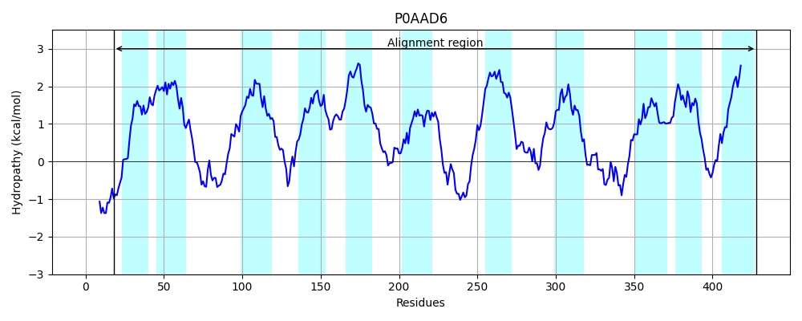

Hit Accession: P0AAD6
Hit TCID: 2.A.42.2.1
Hit Description: gnl|BL_ORD_ID|8656 gnl|TC-DB|P0AAD6|2.A.42.2.1 Serine transporter - Escherichia coli.
Mach Len: 412
e:0.000000
Query TMS Count : 11
Hit TMS Count: 11
TMS-Overlap Score: 10.050000
Predicted Substrates:CHEBI:9116;serine
BLAST Alignment:
Score: 1229 , Bit scores: 478 bits, E-value: 5.4e-168, Alignment length: 412, Percentage identity: 55
Query: 18 WHSEDTVWVLGLFGTAIGAGVLFLPINAGIGGFWPLLIVFALAFPITYLAHRGLARFIYSSNTPESTITDVIGEHFGALAGKVFTVIYFFAVYTILIMYAVAITNTAQSFISHQLGLAEPPRAVVSIVLILGLMFIVRLGQRLIMRVMSTLVYPFIISLIFMALFLIPHWNGAILHTVSF-SAMGDGRGILLTLWMTFPVLVMSFNHYPIVSPMVVRQKQRYGLALAERKCAQIQRYGILLMTVVVLFFVLSCVLSLSPQQLAEAKAQNLSILSYLANQFETPIIAWLSPIIAFVAITKSFLGHYIGAYESLRDLIIEAAAARGKKPTIRAVDAVILVFMVLTCWFAAYKNPSILGIIECISGPTGAAILLLLPMYAIHKLPVLAPYRGKASNVFVTLIGLITVSAIFYGMF 428
W DT+W+LGL+GTAIGAGVLFLPINAG+GG PL+I+ LAFP+T+ AHRGL RF+ S P IT+V+ EHFG AGK+ T++YFFA+Y IL++Y+VAITNT +SF+SHQLG+ PPRA++S++LI+G+M IVR G+++I++ MS LV+PF+ L+ +AL+LIP WNGA L T+S +A G G+ +TLW+ PV+V SFNH PI+S V +++ YG +AE+KC++I + ++M + V+FFV SCVLSL+P LA AK QN+SILSYLAN F P+IAW++PIIA +AITKSFLGHY+GA E ++I++ +GK I ++ + +FM++T W A NPSILG+IE + GP A IL L+PMYAI K+P + Y G SNVFV ++GLI +SAIFY +F
Sbjct: 18 WRKTDTMWMLGLYGTAIGAGVLFLPINAGVGGMIPLIIMAILAFPMTFFAHRGLTRFVLSGKNPGEDITEVVEEHFGIGAGKLITLLYFFAIYPILLVYSVAITNTVESFMSHQLGMTPPPRAILSLILIVGMMTIVRFGEQMIVKAMSILVFPFVGVLMLLALYLIPQWNGAALETLSLDTASATGNGLWMTLWLAIPVMVFSFNHSPIISSFAVAKREEYG-DMAEQKCSKILAFAHIMMVLTVMFFVFSCVLSLTPADLAAAKEQNISILSYLANHFNAPVIAWMAPIIAIIAITKSFLGHYLGAREGFNGMVIKSLRGKGKSIEINKLNRITALFMLVTTWIVATLNPSILGMIETLGGPIIAMILFLMPMYAIQKVPAMRKYSGHISNVFVVVMGLIAISAIFYSLF 428 | Protein Hydropathy Plots: |
|---|
 |  |
Pairwise Alignment-Hydropathy Plot:
|
|---|
 |